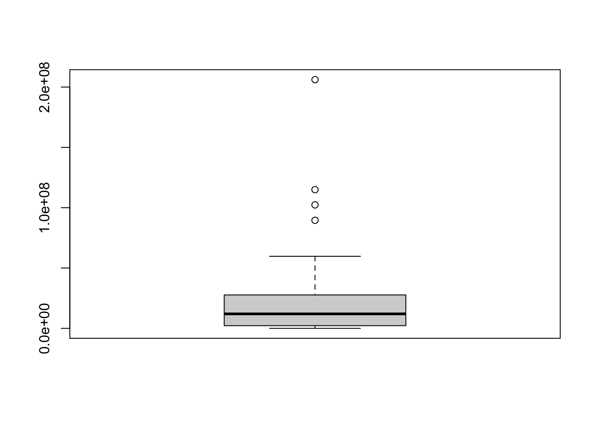
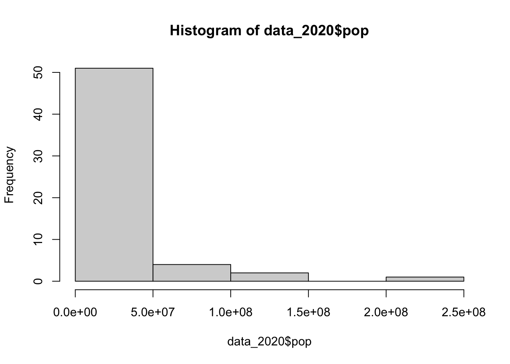
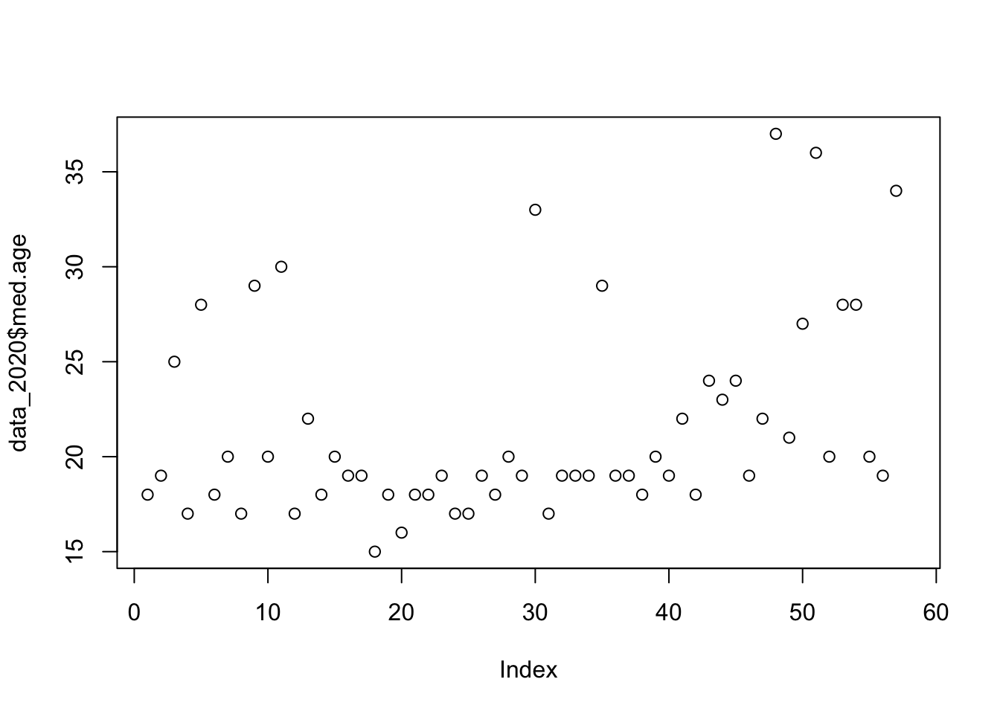
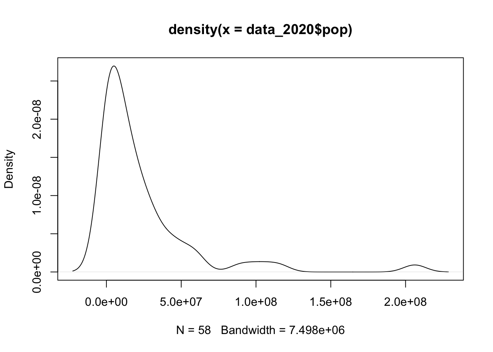

# install package
# install.packages("tidyverse", repos = "http://cran.us.r-project.org")
# install.packages("remotes", repos = "http://cran.us.r-project.org")
# load the necessary libraries
library(tidyverse) #collection of R packages designed for data science
library(dplyr)
library(remotes)Case Study 2, Part 2: The True Size of Africa
DATA 202 - Alexander
In Case Study 2, we will explore the social politics of maps and globally oriented data to help us make sense of what we mean by a “population.” The case study will integrate a series of new packages, functions, and code to support our explorations.
There are two parts to this case study, this is part 2.
Learning Objectives
This case study component will teach you how to use functions in dplyr to manipulate variables and data frames. You will also learn some base-R functions to conduct univariate analysis in the RStudio IDE.
Learning Activities
By the end of this case study you will be able to:
- Install and/or update R packages
- Assign data frames to different names for efficient exploration
- Generate a set of outputs using the
dplyrpackage - Overwrite a data frame while using the pipe operator
- Produce simple plots using data located in an
Rpackage
Reminder: Load lackages and libraries
Part 2: Univariate analysis
In this part of the case study, you will complete the following tasks:
Examine the
africa_data_alldata in thecritstatspackage– Create a table of the number of observations by year
– Gather summary statistics for all variables by year
– Create separate data frames for each year
Compute univariate statistics for the year 2020 in
africa_data_all
Task 2.1: Load the africa_data_all data
The africa_data_all data set will be used for instructional purposes only.
The data in this data frame was collected from the internet.
The data frame contains data on African countries and territories for two years: 2020 and 2023.
Task 2.1.1: Call the africa_data_all data
We begin by taking a look at the data.
critstats::africa_data_all What are some of your early observations?
Task 2.1.2: Inspect africa_data_all documentation
The documentation can help us get a better idea of the data frame’s content.
??critstats::africa_data_all If, by chance, you cannot load the documentation or experience issues with the critstats data package, you may need to restart your RStudio session.
Task 2.2: Prepare the africa_data_all data
To be efficient, we will only use specific functions to explore the data set.
Please note that there are many other approaches to exploration.
The approach taken below is one of many possibiliites.
Task 2.2.1: Assign africa_data_all to df2
Use the assignment operator to assign the africa_data_all data frame to the object df2.
df2 <- critstats::africa_data_allWe can now work more efficiently by typing df2 when we want to call the data frame. Notice that I did not overwrite df1 in the event you want to return to Part 1 of this case study.
Task 2.2.2: Inspect your data
The str() function displays the structure of R objects.
str(df2)tibble [116 × 13] (S3: tbl_df/tbl/data.frame)
$ country : chr [1:116] "Nigeria" "Ethiopia" "Egypt" "DR Congo" ...
$ pop : num [1:116] 2.06e+08 1.15e+08 1.02e+08 8.96e+07 5.93e+07 ...
$ pop.yearly.change: num [1:116] 2.58 2.57 1.94 3.19 1.28 2.98 2.28 3.32 1.85 2.42 ...
$ pop.net.change : num [1:116] 5175990 2884858 1946331 2770836 750420 ...
$ density : num [1:116] 226 115 103 40 49 67 94 229 18 25 ...
$ area : num [1:116] 910770 1000000 995450 2267050 1213090 ...
$ migrants : num [1:116] -60000 30000 -38033 23861 145405 ...
$ fertility.rate : num [1:116] 5.4 4.3 3.3 6 2.4 4.9 3.5 5 3.1 4.4 ...
$ med.age : num [1:116] 18 19 25 17 28 18 20 17 29 20 ...
$ urban.pop : num [1:116] 52 21 43 46 67 37 28 26 73 35 ...
$ world.share : num [1:116] 2.64 1.47 1.31 1.15 0.76 0.77 0.69 0.59 0.56 0.56 ...
$ pop_in_mill : num [1:116] 206.1 115 102.3 89.6 59.3 ...
$ year : num [1:116] 2020 2020 2020 2020 2020 2020 2020 2020 2020 2020 ...Use head() to view the “top” of your data.
head(df2)# A tibble: 6 × 13
country pop pop.yearly.change pop.net.change density area migrants
<chr> <dbl> <dbl> <dbl> <dbl> <dbl> <dbl>
1 Nigeria 2.06e8 2.58 5175990 226 9.11e5 -60000
2 Ethiopia 1.15e8 2.57 2884858 115 1 e6 30000
3 Egypt 1.02e8 1.94 1946331 103 9.95e5 -38033
4 DR Congo 8.96e7 3.19 2770836 40 2.27e6 23861
5 South Africa 5.93e7 1.28 750420 49 1.21e6 145405
6 Tanzania 5.97e7 2.98 1728755 67 8.86e5 -40076
# ℹ 6 more variables: fertility.rate <dbl>, med.age <dbl>, urban.pop <dbl>,
# world.share <dbl>, pop_in_mill <dbl>, year <dbl>Use tail() to view the “bottom” of your data.
tail(df2)# A tibble: 6 × 13
country pop pop.yearly.change pop.net.change density area migrants
<chr> <dbl> <dbl> <dbl> <dbl> <dbl> <dbl>
1 Cabo Verde 598682 0.93 5533 149 4030 -1227
2 Western Sahara 587259 1.96 11273 2 266000 5600
3 Mayotte 335995 3.03 9894 896 375 0
4 Sao Tome & Pr… 231856 1.97 4476 242 960 -600
5 Seychelles 107660 0.51 542 234 460 -200
6 Saint Helena 5314 -1.12 -60 14 390 0
# ℹ 6 more variables: fertility.rate <dbl>, med.age <dbl>, urban.pop <dbl>,
# world.share <dbl>, pop_in_mill <dbl>, year <dbl>View your data using the view() command.
View(df2)Get a summary of your data with summary().
summary(df2) country pop pop.yearly.change pop.net.change
Length:116 Min. : 5314 Min. :-1.120 Min. : -60
Class :character 1st Qu.: 2346300 1st Qu.: 1.567 1st Qu.: 46843
Mode :character Median : 12705220 Median : 2.400 Median : 320017
Mean : 24147241 Mean : 2.141 Mean : 571374
3rd Qu.: 29236208 3rd Qu.: 2.732 3rd Qu.: 700895
Max. :223804632 Max. : 3.840 Max. :5263420
density area migrants fertility.rate
Min. : 2.0 Min. : 375 Min. :-174200 Min. :1.400
1st Qu.: 25.0 1st Qu.: 28120 1st Qu.: -10024 1st Qu.:3.150
Median : 64.0 Median : 269800 Median : -4000 Median :4.100
Mean :124.5 Mean : 511181 Mean : -8680 Mean :3.983
3rd Qu.:137.2 3rd Qu.: 823290 3rd Qu.: -100 3rd Qu.:4.700
Max. :896.0 Max. :2381740 Max. : 168694 Max. :7.000
NA's :1 NA's :1
med.age urban.pop world.share pop_in_mill
Min. :15.0 Min. : 14.00 Min. :0.0000 Min. : 0.00531
1st Qu.:18.0 1st Qu.: 35.00 1st Qu.:0.0300 1st Qu.: 2.34630
Median :19.0 Median : 46.00 Median :0.1600 Median : 12.70522
Mean :21.3 Mean : 49.15 Mean :0.3048 Mean : 24.14724
3rd Qu.:22.5 3rd Qu.: 66.25 3rd Qu.:0.3650 3rd Qu.: 29.23621
Max. :53.0 Max. :100.00 Max. :2.7800 Max. :223.80463
NA's :1
year
Min. :2020
1st Qu.:2020
Median :2022
Mean :2022
3rd Qu.:2023
Max. :2023
Take note of the content and values of the data and its structure.
Task 2.3: Examine the data in detail
Before starting any analyses, we want to make sure we really understand our data.
You may have noticed that there is a year variable in the data set.
Specifically, the variable year separates the 2020 and 2023 data.
Task 2.3.1: Make a table of a single variable’s contents
To examine how many data values are listed by year we can use table().
# create a table of the number of observations by year
table(df2$year)
2020 2023
58 58 We notice 58 values for each year. What does this say about our data?
Task 2.3.2: Gather summary statistics for the data by year
There are different ways to gather summary statistics by year.
I can nest the request using some logic and the year 2020 as follows:
summary(filter(df2, year == 2020)) country pop pop.yearly.change pop.net.change
Length:58 Min. : 6077 Min. :0.170 Min. : 18
Class :character 1st Qu.: 2257207 1st Qu.:1.555 1st Qu.: 47292
Mode :character Median : 12006992 Median :2.450 Median : 269752
Mean : 23113761 Mean :2.212 Mean : 560930
3rd Qu.: 27404729 3rd Qu.:2.810 3rd Qu.: 667545
Max. :206139589 Max. :3.840 Max. :5175990
density area migrants fertility.rate
Min. : 2.0 Min. : 375 Min. :-174200 Min. :1.400
1st Qu.: 25.0 1st Qu.: 28680 1st Qu.: -10047 1st Qu.:3.300
Median : 61.5 Median : 269800 Median : -4000 Median :4.400
Mean :119.0 Mean : 511181 Mean : -8124 Mean :4.144
3rd Qu.:131.5 3rd Qu.: 814062 3rd Qu.: 0 3rd Qu.:4.800
Max. :728.0 Max. :2381740 Max. : 168694 Max. :7.000
NA's :1 NA's :1
med.age urban.pop world.share pop_in_mill
Min. :15.00 Min. : 14.00 Min. :0.0000 Min. : 0.00608
1st Qu.:18.00 1st Qu.: 35.50 1st Qu.:0.0300 1st Qu.: 2.25721
Median :19.00 Median : 46.00 Median :0.1550 Median : 12.00699
Mean :21.46 Mean : 48.90 Mean :0.2964 Mean : 23.11376
3rd Qu.:23.00 3rd Qu.: 63.75 3rd Qu.:0.3550 3rd Qu.: 27.40473
Max. :37.00 Max. :100.00 Max. :2.6400 Max. :206.13959
NA's :1
year
Min. :2020
1st Qu.:2020
Median :2020
Mean :2020
3rd Qu.:2020
Max. :2020
Consider why filter(summary(df2, year == 2020)) returns an error.
We can also use the %>% operator to list the commands in order for 2020.
# gather summary statistics for all variables for year == 2020
df2 %>%
filter(year == 2020) %>%
summary() country pop pop.yearly.change pop.net.change
Length:58 Min. : 6077 Min. :0.170 Min. : 18
Class :character 1st Qu.: 2257207 1st Qu.:1.555 1st Qu.: 47292
Mode :character Median : 12006992 Median :2.450 Median : 269752
Mean : 23113761 Mean :2.212 Mean : 560930
3rd Qu.: 27404729 3rd Qu.:2.810 3rd Qu.: 667545
Max. :206139589 Max. :3.840 Max. :5175990
density area migrants fertility.rate
Min. : 2.0 Min. : 375 Min. :-174200 Min. :1.400
1st Qu.: 25.0 1st Qu.: 28680 1st Qu.: -10047 1st Qu.:3.300
Median : 61.5 Median : 269800 Median : -4000 Median :4.400
Mean :119.0 Mean : 511181 Mean : -8124 Mean :4.144
3rd Qu.:131.5 3rd Qu.: 814062 3rd Qu.: 0 3rd Qu.:4.800
Max. :728.0 Max. :2381740 Max. : 168694 Max. :7.000
NA's :1 NA's :1
med.age urban.pop world.share pop_in_mill
Min. :15.00 Min. : 14.00 Min. :0.0000 Min. : 0.00608
1st Qu.:18.00 1st Qu.: 35.50 1st Qu.:0.0300 1st Qu.: 2.25721
Median :19.00 Median : 46.00 Median :0.1550 Median : 12.00699
Mean :21.46 Mean : 48.90 Mean :0.2964 Mean : 23.11376
3rd Qu.:23.00 3rd Qu.: 63.75 3rd Qu.:0.3550 3rd Qu.: 27.40473
Max. :37.00 Max. :100.00 Max. :2.6400 Max. :206.13959
NA's :1
year
Min. :2020
1st Qu.:2020
Median :2020
Mean :2020
3rd Qu.:2020
Max. :2020
We can use the same commands to filter the data for 2023.
# gather summary statistics for all variables for year == 2023
df2 %>%
filter(year == 2023) %>%
summary() country pop pop.yearly.change pop.net.change
Length:58 Min. : 5314 Min. :-1.120 Min. : -60
Class :character 1st Qu.: 2478468 1st Qu.: 1.580 1st Qu.: 45111
Mode :character Median : 13475694 Median : 2.300 Median : 324628
Mean : 25180720 Mean : 2.071 Mean : 581818
3rd Qu.: 29962558 3rd Qu.: 2.667 3rd Qu.: 702468
Max. :223804632 Max. : 3.800 Max. :5263420
density area migrants fertility.rate
Min. : 2.00 Min. : 375 Min. :-126181 Min. :1.400
1st Qu.: 27.25 1st Qu.: 28680 1st Qu.: -10000 1st Qu.:2.825
Median : 65.50 Median : 269800 Median : -4000 Median :3.900
Mean :130.05 Mean : 511181 Mean : -9228 Mean :3.824
3rd Qu.:143.50 3rd Qu.: 814062 3rd Qu.: -300 3rd Qu.:4.375
Max. :896.00 Max. :2381740 Max. : 58496 Max. :6.700
med.age urban.pop world.share pop_in_mill
Min. :15.00 Min. :15.00 Min. :0.0000 Min. : 0.00531
1st Qu.:17.00 1st Qu.:35.50 1st Qu.:0.0300 1st Qu.: 2.47847
Median :19.00 Median :46.00 Median :0.1650 Median : 13.47569
Mean :21.14 Mean :49.40 Mean :0.3133 Mean : 25.18072
3rd Qu.:22.00 3rd Qu.:66.75 3rd Qu.:0.3750 3rd Qu.: 29.96256
Max. :53.00 Max. :95.00 Max. :2.7800 Max. :223.80463
year
Min. :2023
1st Qu.:2023
Median :2023
Mean :2023
3rd Qu.:2023
Max. :2023 Task 2.4: Get univariate statistics
To help advance our understanding of statistical analyses in the RStudio IDE, we will lean a few tasks to compute univariate statistics. You are likely familiar with univariate statistics. Univariate statistics are statistics done on a single variable. Some base R functions for univariate statistics are as follows:
mean()returns the mean of a single numeric variablemedian()returns the middle value of a single numeric variablemode()returns the variable type for the mode of a single variabletable()returns a frequency table with counts of each level for a single variablemax()returns the maximum value of a single numeric variablemin()returns the minimum value of a single numeric variablerange()returns themin()andmax()values of a single numeric variableIQR()returns the interquartile range values for a single numeric variablesd()returns the standard deviation for a single numeric variableboxplot()returns a boxplot of a numeric variable or variableshist()returns a histogram of a single numeric variablestem()provides a stem-and-leaf plot when a single numeric variable is input.plot()provides a scatter plot of data values by its index, \(i\).plot(density())provides a density plot of a single numeric variable
Each of the above functions provides a different perspective on the distribution of values for a single variable.
Task 2.4.1: Inspect data prior to analysis
From our earlier observations, we see that the africa_data_all (df2) contains data across two years: 2020 and 2023. Let’s use pipes %>% to create separate data from for each year.
# create a separate data frame for 2020
data_2020 <- df2 %>%
filter(year == 2020)
data_2020 # view the data for 2020# A tibble: 58 × 13
country pop pop.yearly.change pop.net.change density area migrants
<chr> <dbl> <dbl> <dbl> <dbl> <dbl> <dbl>
1 Nigeria 2.06e8 2.58 5175990 226 9.11e5 -60000
2 Ethiopia 1.15e8 2.57 2884858 115 1 e6 30000
3 Egypt 1.02e8 1.94 1946331 103 9.95e5 -38033
4 DR Congo 8.96e7 3.19 2770836 40 2.27e6 23861
5 South Africa 5.93e7 1.28 750420 49 1.21e6 145405
6 Tanzania 5.97e7 2.98 1728755 67 8.86e5 -40076
7 Kenya 5.38e7 2.28 1197323 94 5.69e5 -10000
8 Uganda 4.57e7 3.32 1471413 229 2.00e5 168694
9 Algeria 4.39e7 1.85 797990 18 2.38e6 -10000
10 Sudan 4.38e7 2.42 1036022 25 1.77e6 -50000
# ℹ 48 more rows
# ℹ 6 more variables: fertility.rate <dbl>, med.age <dbl>, urban.pop <dbl>,
# world.share <dbl>, pop_in_mill <dbl>, year <dbl>It is not clear that this data is for 2020. As a result, we can reorganize the columns and overwrite the data frame.
I am moving the year variable to the second position in the data frame.
data_2020 <- df2 %>%
filter(year == 2020) %>%
relocate(country, year)
data_2020 # view the data for 2020# A tibble: 58 × 13
country year pop pop.yearly.change pop.net.change density area migrants
<chr> <dbl> <dbl> <dbl> <dbl> <dbl> <dbl> <dbl>
1 Nigeria 2020 2.06e8 2.58 5175990 226 9.11e5 -60000
2 Ethiop… 2020 1.15e8 2.57 2884858 115 1 e6 30000
3 Egypt 2020 1.02e8 1.94 1946331 103 9.95e5 -38033
4 DR Con… 2020 8.96e7 3.19 2770836 40 2.27e6 23861
5 South … 2020 5.93e7 1.28 750420 49 1.21e6 145405
6 Tanzan… 2020 5.97e7 2.98 1728755 67 8.86e5 -40076
7 Kenya 2020 5.38e7 2.28 1197323 94 5.69e5 -10000
8 Uganda 2020 4.57e7 3.32 1471413 229 2.00e5 168694
9 Algeria 2020 4.39e7 1.85 797990 18 2.38e6 -10000
10 Sudan 2020 4.38e7 2.42 1036022 25 1.77e6 -50000
# ℹ 48 more rows
# ℹ 5 more variables: fertility.rate <dbl>, med.age <dbl>, urban.pop <dbl>,
# world.share <dbl>, pop_in_mill <dbl>We can run the same functions for year == 2023.
# create a separate data frame for 2023
data_2023 <- df2 %>%
filter(year == 2023) %>%
relocate(country, year)
data_2023 # view the data for 2023# A tibble: 58 × 13
country year pop pop.yearly.change pop.net.change density area migrants
<chr> <dbl> <dbl> <dbl> <dbl> <dbl> <dbl> <dbl>
1 Nigeria 2023 2.24e8 2.41 5263420 246 9.11e5 -59996
2 Ethiop… 2023 1.27e8 2.55 3147136 127 1 e6 -11999
3 Egypt 2023 1.13e8 1.56 1726495 113 9.95e5 -29998
4 DR Con… 2023 1.02e8 3.29 3252596 45 2.27e6 -14999
5 Tanzan… 2023 6.74e7 2.96 1940358 76 8.86e5 -39997
6 South … 2023 6.04e7 0.87 520610 50 1.21e6 58496
7 Kenya 2023 5.51e7 1.99 1073099 97 5.69e5 -10000
8 Sudan 2023 4.81e7 2.63 1234802 27 1.77e6 -9999
9 Uganda 2023 4.86e7 2.82 1332749 243 2.00e5 -126181
10 Algeria 2023 4.56e7 1.57 703255 19 2.38e6 -9999
# ℹ 48 more rows
# ℹ 5 more variables: fertility.rate <dbl>, med.age <dbl>, urban.pop <dbl>,
# world.share <dbl>, pop_in_mill <dbl>It is now clearer which year we are loading when we view the data frames.
Task 2.4.1a: Check for missing data
We can check the entire data frame for missing values using is.na().
is.na(data_2020)
is.na(data_2023)You can see that this output is far too extensive.
We should check for missing values for a specific variable first.
Let’s use the migrants variable in the df2 data frame by inserting df2$migrants.
The code to check for missing values in the 2020 data frame for the variable migrant is as follows:
is.na(data_2020$migrants) [1] FALSE FALSE FALSE FALSE FALSE FALSE FALSE FALSE FALSE FALSE FALSE FALSE
[13] FALSE FALSE FALSE FALSE FALSE FALSE FALSE FALSE FALSE FALSE FALSE FALSE
[25] FALSE FALSE FALSE FALSE FALSE FALSE FALSE FALSE FALSE FALSE FALSE FALSE
[37] FALSE FALSE FALSE FALSE FALSE FALSE FALSE FALSE FALSE FALSE FALSE FALSE
[49] FALSE FALSE FALSE FALSE FALSE FALSE FALSE FALSE FALSE TRUENotice that there is a missing value for the variable migrant in the 2020 data.
It may be important to see the total number of missing values in the data frame. We can check the number of missing values for each variable using sapply(). The sapply() is a base-R function and it is used for different purposes. Here is an example:
sapply(data_2020, function(x) sum(is.na(x))) country year pop pop.yearly.change
0 0 0 0
pop.net.change density area migrants
0 0 0 1
fertility.rate med.age urban.pop world.share
1 1 0 0
pop_in_mill
0 sapply() is a loop function and the above code iterates the function for each variable in the df2 data set.
The logic of the function is sapply(data, FUNction...).
From the output, we notice that a few different variables have a missing value.
You can use the view() function to take a closer look at the data to find the missing values.
What do you notice about the source of the missing values when using view()?
Task 2.4.1b: Working with missing values
In class, we will learn how to deal with missing values. For now, you can remove missing values using the code below or select those variables that has no missing values for your case study reports.
When conducting univariate statistics, we can simply tell R to ignore missing values.
# mean returns `NA` since there are missing values
mean(data_2020$migrants)[1] NAUse na.rm = TRUE to remove missing values from a numeric variable
# instruct R to remove missing values from the analysis using `
mean(data_2020$migrants, na.rm = TRUE)[1] -8123.684There are some exceptions here and it relates to the type of variable being used. We’ll explore missing values in class.
For our next set of tasks, we will focus on variables in the data_2020 data frame.
Recall that data_2020 was used as a label for africa_data_all when year == 2020.
Task 2.4.2: mean()
The mean() function returns the mean of a single numeric variable.
# find the average population in 2020
mean(data_2020$pop)[1] 23113761# find the average percent urban population in 2020
mean(data_2020$urban.pop)[1] 48.89655# find the average of median age in 2020
mean(data_2020$med.age)[1] NANotice that the last command returns NA due to missing values.
We can correct this by using na.rm = TRUE.
# check to see missing data in the variable
is.na(data_2020$med.age) [1] FALSE FALSE FALSE FALSE FALSE FALSE FALSE FALSE FALSE FALSE FALSE FALSE
[13] FALSE FALSE FALSE FALSE FALSE FALSE FALSE FALSE FALSE FALSE FALSE FALSE
[25] FALSE FALSE FALSE FALSE FALSE FALSE FALSE FALSE FALSE FALSE FALSE FALSE
[37] FALSE FALSE FALSE FALSE FALSE FALSE FALSE FALSE FALSE FALSE FALSE FALSE
[49] FALSE FALSE FALSE FALSE FALSE FALSE FALSE FALSE FALSE TRUE# compute the mean using the na.rm = TRUE
mean(data_2020$med.age, na.rm = TRUE)[1] 21.45614Task 2.4.3: median()
The median() function returns the middle value of a single numeric variable.
median(data_2020$pop)[1] 12006992We can also use pipe operators to filter the countries that are above and below the median values.
# filter data to show countries that are below the median
data_2020 %>%
filter(pop < median(pop)) %>%
select(country, pop)# A tibble: 29 × 2
country pop
<chr> <dbl>
1 Tunisia 11818619
2 Burundi 11890784
3 South Sudan 11193725
4 Togo 8278724
5 Sierra Leone 7976983
6 Libya 6871292
7 Congo 5518087
8 Liberia 5057681
9 Central African Republic 4829767
10 Mauritania 4649658
# ℹ 19 more rows# filter data to show countries that are above the median
data_2020 %>%
filter(pop > median(pop)) %>%
select(country, pop)# A tibble: 29 × 2
country pop
<chr> <dbl>
1 Nigeria 206139589
2 Ethiopia 114963588
3 Egypt 102334404
4 DR Congo 89561403
5 South Africa 59308690
6 Tanzania 59734218
7 Kenya 53771296
8 Uganda 45741007
9 Algeria 43851044
10 Sudan 43849260
# ℹ 19 more rowsTask 2.4.4: mode() and table()
The mode() function returns the variable type for the mode of a single variable.
# what does this output tell us about the mode of the med.age variable?
mode(data_2020$med.age) [1] "numeric"We can use the table() function to get our mode.
The table() function returns a frequency table with counts of each level for a single variable.
# what does this updated output tell us about the mode of the med.age variable?
table(data_2020$med.age)
15 16 17 18 19 20 21 22 23 24 25 27 28 29 30 33 34 36 37
1 1 6 9 14 7 1 3 1 2 1 1 3 2 1 1 1 1 1 Task 2.4.5: max() and min()
The max() function returns the maximum value of a single numeric variable.
# get the maximum value
max(data_2020$pop)[1] 206139589# use pipes to gather details about which country or territory has the max value
data_2020 %>%
filter(pop == max(pop)) %>%
select(country, pop)# A tibble: 1 × 2
country pop
<chr> <dbl>
1 Nigeria 206139589The min() function returns the minimum value of a single numeric variable.
# get the minimum value
min(data_2020$pop)[1] 6077# use pipes to gather details about which country or territory has the min value
data_2020 %>%
filter(pop == min(pop)) %>%
select(country, pop)# A tibble: 1 × 2
country pop
<chr> <dbl>
1 Saint Helena 6077Task 2.4.6: range()
The range() function returns the min() and max() values of a single numeric variable.
range(data_2020$pop)[1] 6077 206139589However, we can manually compute the range by using arithmetic with our functions.
# generate a new variable call population range that is the maximum minus the minimum value
pop_range_2020 <- max(data_2020$pop) - min(data_2020$pop)
pop_range_2020 # we must call the object back to see its value[1] 206133512Task 2.4.7: IQR()
# find the IQR for the 2020 population variable
IQR(data_2020$pop)[1] 25147522# find the IQR for the 2020 percent urban population variable
IQR(data_2020$urban.pop)[1] 28.25Task 2.4.8: sd()
The sd() function returns the standard deviation for a single numeric variable.
# find the standard deviation of the 2020 population variable
sd(data_2020$pop)[1] 35061685# find the standard deviation of the 2020 urban population variable
sd(data_2020$urban.pop)[1] 19.83501Task 2.4.8: Use summary()
The summary() function is often more efficient for a quick check of univariate statistics.
summary(data_2020) country year pop pop.yearly.change
Length:58 Min. :2020 Min. : 6077 Min. :0.170
Class :character 1st Qu.:2020 1st Qu.: 2257207 1st Qu.:1.555
Mode :character Median :2020 Median : 12006992 Median :2.450
Mean :2020 Mean : 23113761 Mean :2.212
3rd Qu.:2020 3rd Qu.: 27404729 3rd Qu.:2.810
Max. :2020 Max. :206139589 Max. :3.840
pop.net.change density area migrants
Min. : 18 Min. : 2.0 Min. : 375 Min. :-174200
1st Qu.: 47292 1st Qu.: 25.0 1st Qu.: 28680 1st Qu.: -10047
Median : 269752 Median : 61.5 Median : 269800 Median : -4000
Mean : 560930 Mean :119.0 Mean : 511181 Mean : -8124
3rd Qu.: 667545 3rd Qu.:131.5 3rd Qu.: 814062 3rd Qu.: 0
Max. :5175990 Max. :728.0 Max. :2381740 Max. : 168694
NA's :1
fertility.rate med.age urban.pop world.share
Min. :1.400 Min. :15.00 Min. : 14.00 Min. :0.0000
1st Qu.:3.300 1st Qu.:18.00 1st Qu.: 35.50 1st Qu.:0.0300
Median :4.400 Median :19.00 Median : 46.00 Median :0.1550
Mean :4.144 Mean :21.46 Mean : 48.90 Mean :0.2964
3rd Qu.:4.800 3rd Qu.:23.00 3rd Qu.: 63.75 3rd Qu.:0.3550
Max. :7.000 Max. :37.00 Max. :100.00 Max. :2.6400
NA's :1 NA's :1
pop_in_mill
Min. : 0.00608
1st Qu.: 2.25721
Median : 12.00699
Mean : 23.11376
3rd Qu.: 27.40473
Max. :206.13959
Not, however, the values that summary() returns and those that it does not. While the function can be used to be more efficient, it should not replace a thorough inspection of your data. We will discuss this more in exploratory data anlaysis.
Task 2.5: Create basic plots
Task 2.5.1: boxplot()
boxplot() returns a box plot of a numeric variable or variables.
boxplot(data_2020$pop)
Task 2.5.2: hist()
hist() returns a histogram of a single numeric variable.
hist(data_2020$pop)
Task 2.5.3: stem()
stem() provides a stem-and-leaf plot when a single numeric variable is input.
stem(data_2020$med.age)
The decimal point is at the |
14 | 0
16 | 0000000
18 | 00000000000000000000000
20 | 00000000
22 | 0000
24 | 000
26 | 0
28 | 00000
30 | 0
32 | 0
34 | 0
36 | 00Task 2.5.4: plot()
plot() provides a scatter plot of data values by its index, \(i\).
plot(data_2020$med.age)
Task 2.5.5: plot(density())
plot(density()) provides a density plot of a single numeric variable
plot(density(data_2020$pop))
Preparing Case Study and Lab Reports
Labs and case studies contain Reports. In this way, we have both lab reports and case reports.
Lab reports are for your own research papers. Case reports are for your exploratory work.
Reports, as the name may suggest, are meant to help you report out your own workflow.
Developing your own workflow is an important part of statistical analysis. Your workflow and reports should not be a copy and paste of the exact code outlined in a case study’s examples. That said, most examples and the code used are specifically designed to help us move efficiently through the materials for this course.
Note: The use of internet resources like Chat GPT are discouraged when generating code. If an assignment is submitted after using any AI assisted software, there may be an issue with plagiarism. All code for our course is self-contained, and it should not require that you search for long hours to find a solution; all solutions are somewhere on our course site!
Part 2 Reports
Report 1.6
State each variable and variable type in the africa_data_all data frame.
What code provides us with the requested information most efficiently?
Report 1.7
Why does filter(summary(df2, year == 2020)) return an error?
Recall that df2 was used as a label for africa_data_all.
Report 1.8
When using view(data_2020) after running the sapply(data_2020, function(x) sum(is.na(x))), what do you notice? Specifically, what country (or territory) is the source of the missing data values?
Recall that data_2020 was used as a label for africa_data_all when year == 2020.
Report 1.9
Compute univariate statistics for two numeric variables in africa_data_all for year == 2023.
Univariate statistics for each variable should include: mean(), median(), a method to find the mode of the varaible, if it exists, max() and min(), a method to find the range of the varaible, IQR(), and sd().
Report 1.10
Create basic plots (i.e., boxplot(), hist(), plot(), and plot(density())) for the two numeric variables that you used in Report 1.9 (above). Add a title to each plot.
{Save each plot in your directory}.
Experiencing issues?
If you experience issues executing your code, check the notes below.
Remember that R is case sensitive in all instances, and space sensitive in some instances. Please be sure to go back and carefully check your code.
If you get the following error:
lazy-load database ‘…rdb’ is corrupt
Try the following method and re-install the package.
Restart your R session by running .rs.restartR() in your RStudio Console.
The package might have been installed in your computer (even though it does not work). Remove it using '?remove.packages()'.
Do not hesitate to contact me via email.